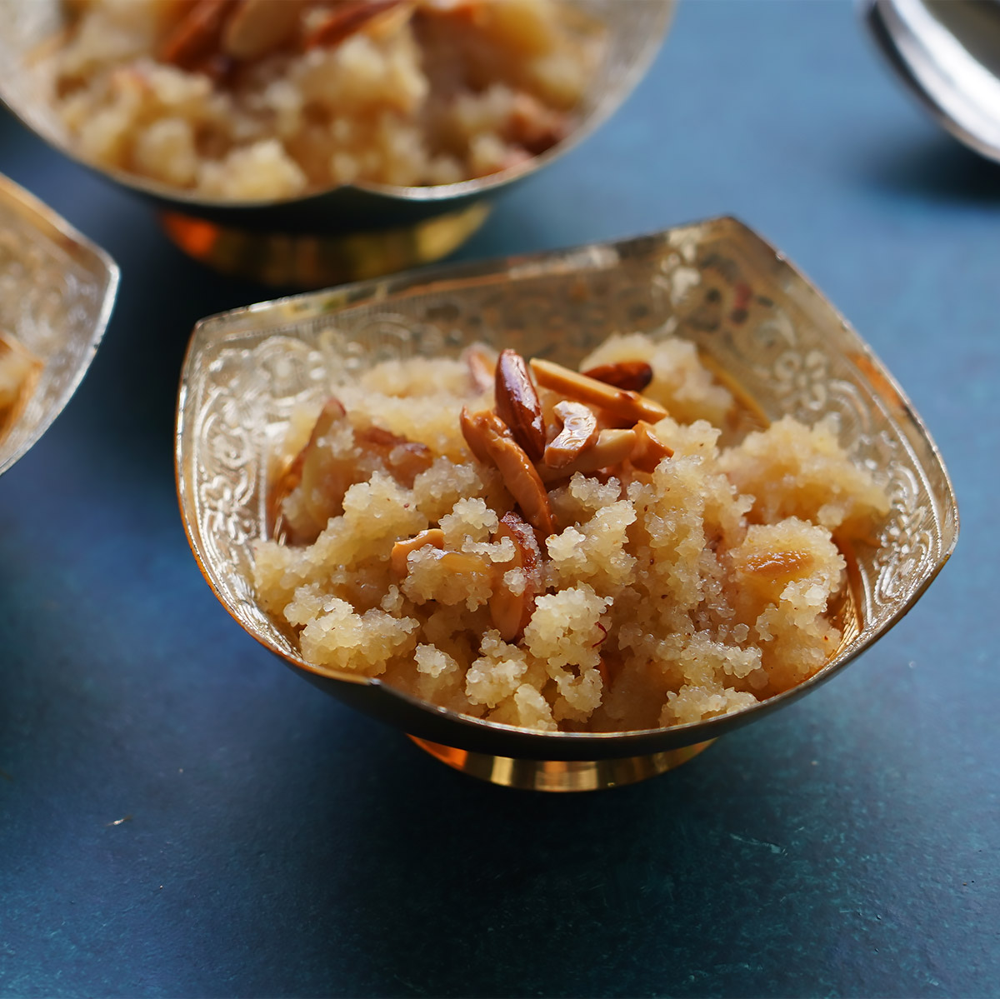

Suji ka Halwa

What is Suji ka Halwa?
Suji ka halwa, also known as semolina pudding or semolina halwa, is a popular sweet dish in the Indian
subcontinent. It is made by roasting semolina (suji or rava) in ghee (clarified butter) and then cooking it with
sugar, water, and flavored with cardamom and nuts. Suji ka halwa is often prepared during festivals, special
occasions, or as a dessert.
Ingredients:
- 1 cup semolina (suji/rava)
- 1 cup sugar
- 1/4 cup ghee (clarified butter)
- 2 cups water
- 1/2 teaspoon cardamom powder
- A handful of nuts (such as almonds, cashews, and raisins) for garnish
Cooking Instructions:
- Heat ghee in a pan or kadai over medium heat.
- Add semolina (suji) to the pan and roast it until it turns golden brown and gives off a nutty aroma. Stir
constantly to ensure even browning and prevent burning.
- In a separate saucepan, heat water and bring it to a boil.
- Slowly add the boiling water to the roasted semolina, stirring continuously to prevent lumps from forming.
- Be cautious as the mixture may splutter, so stir carefully and avoid any hot steam.
- Cook the semolina mixture on low heat until it thickens and the semolina is fully cooked. This should take
around 5-7 minutes.
- Add sugar and cardamom powder to the mixture and stir well until the sugar dissolves completely.
- Continue to cook the halwa for a few more minutes until it reaches a desired consistency. It should be
smooth and slightly thick.
- In a separate small pan, heat a little ghee and roast the nuts until they turn golden brown.
- Garnish the halwa with the roasted nuts and mix them in gently.
- Remove the suji ka halwa from heat and serve it warm.
Home